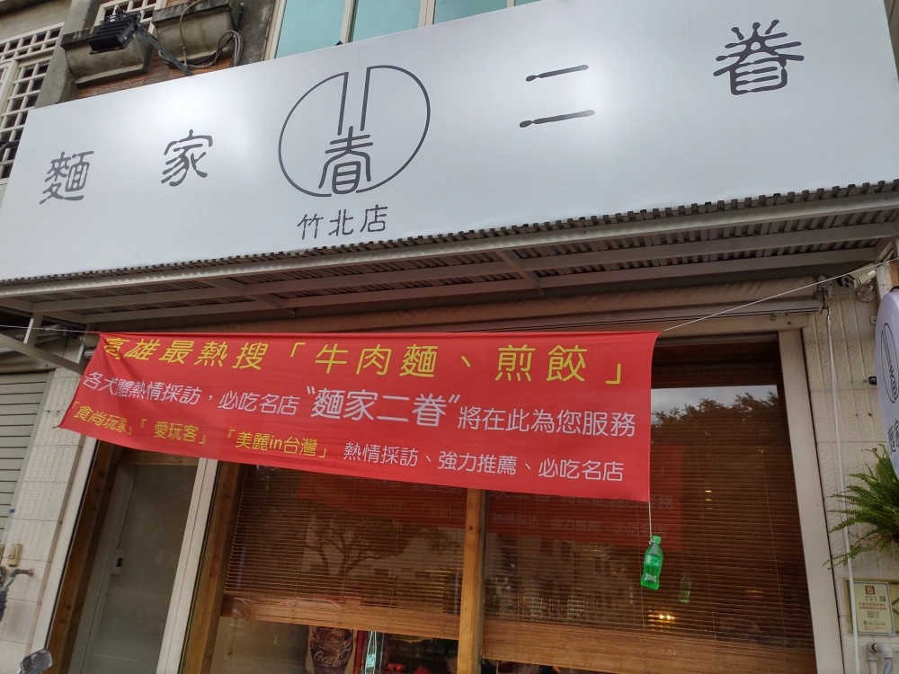
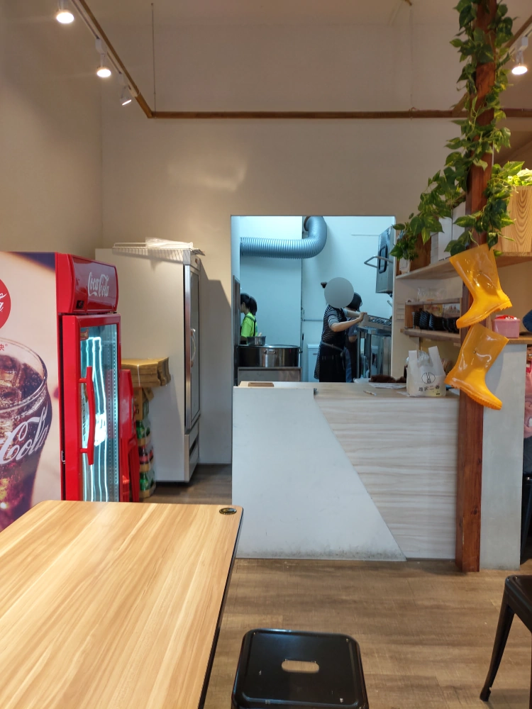
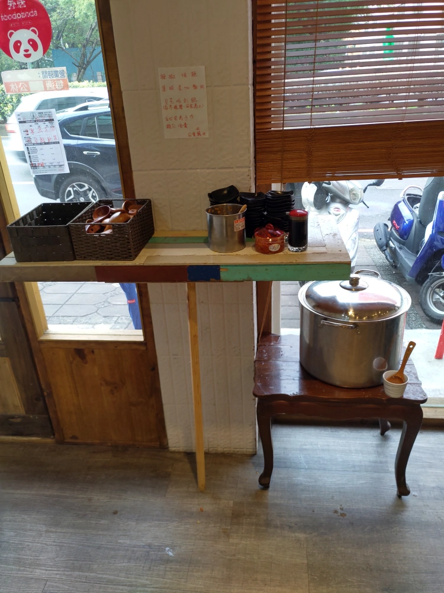
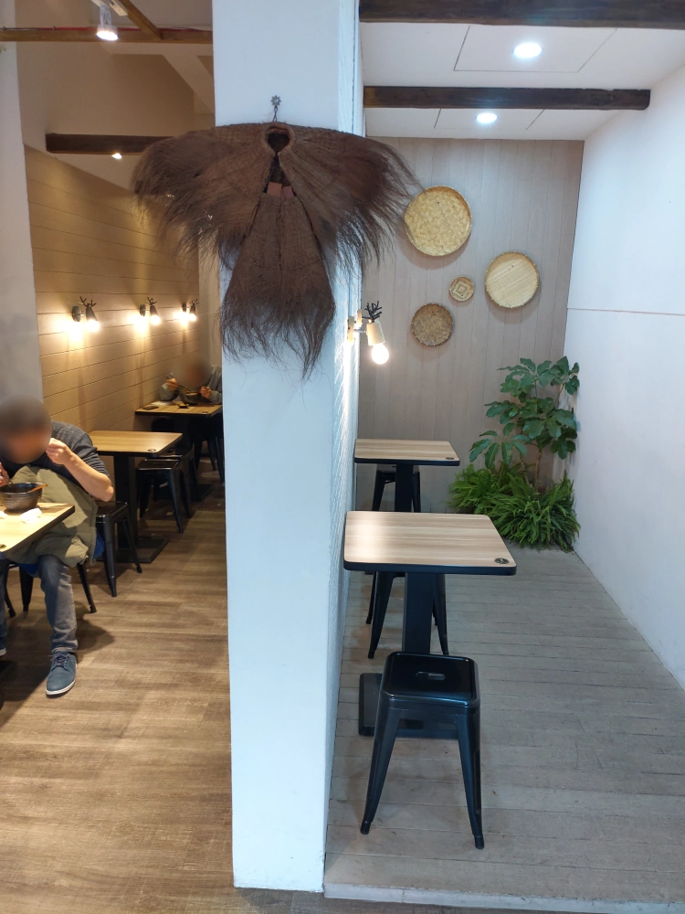
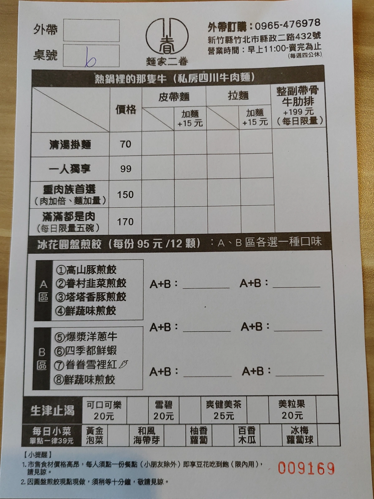
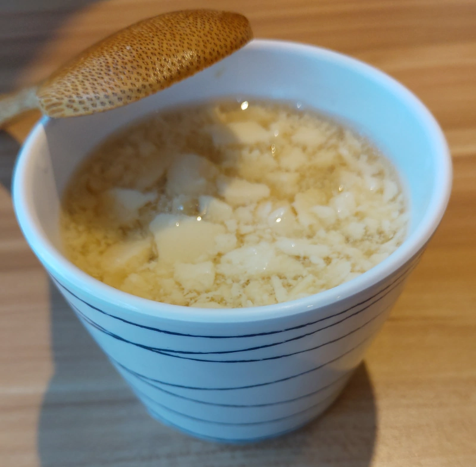
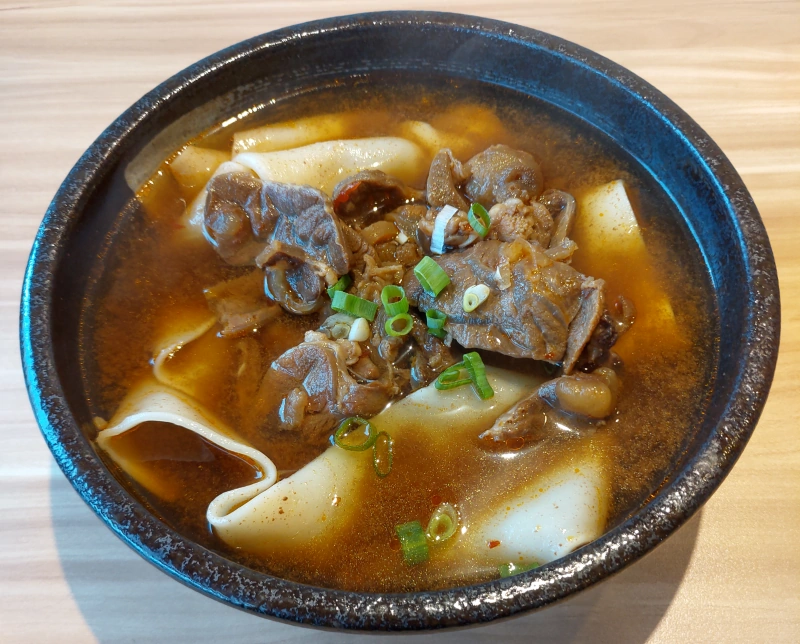
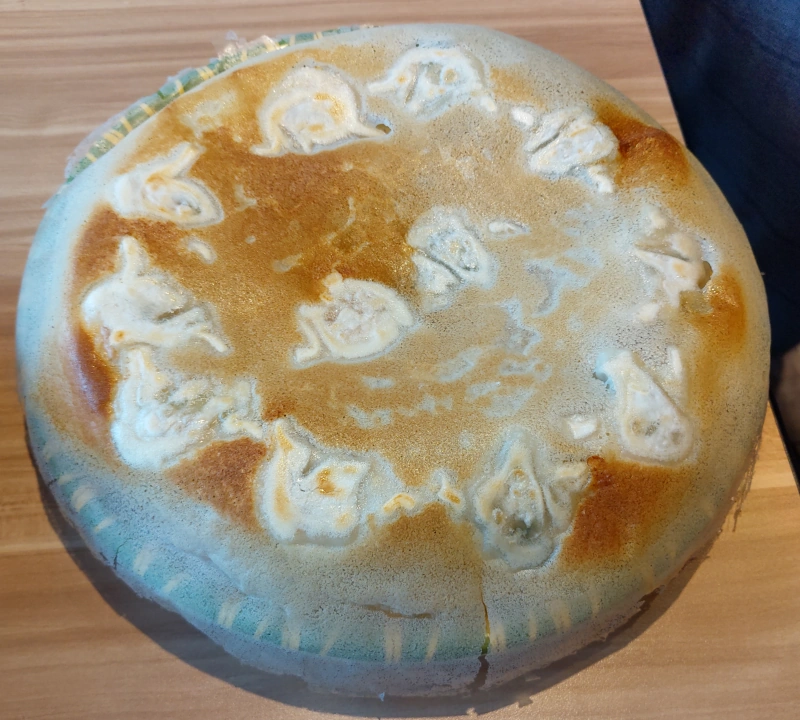
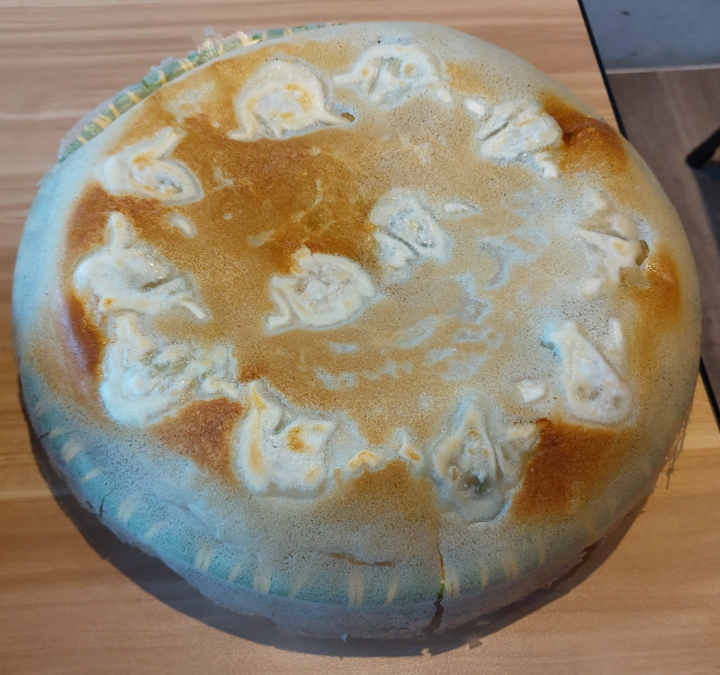

[竹北] 麵家二眷-竹北店
| 餐廳名稱: | 麵家二眷-竹北店 |
|---|---|
| 地 址: | 竹北市縣政二路432號 |
| 營業時間: | 週五~週三 11:30 - 賣完為止，最晚 20:00 |
| 週四公休 | |
| 電 話: | 0965 476 978 |
這個位置本來是 某村 麵包店，它也算蠻有特色的，可是不知什麼原因結束了。結束後沒多久，這家 麵家二眷-竹北店 就開業了，竟然人潮還蠻多的，因為頗好奇，某個機會就來嘗鮮了，原來是高雄名店來竹北開分店，味道已經在南部被市場驗證過了。
除了縣政二路對面的停車場，最近的停車場應該是 光明一路87號 的私人停車場。但它也沒幾個車位，光明一路又多間餐廳，很容易滿。該停車場兩頭開口，從縣政一路這條巷子走出來，左轉就是 麵家二眷-竹北店。 
櫃檯區，後方是廚房。 
餐具區，還有 菜圃、辣椒等輔助調味的免費小菜，免費的豆花也放在這裡。 
座位區，這一區大部分都雙人位，另外有一區 大多是四人位。 
這家就賣 牛肉麵與煎餃兩種東西，所以菜單就是 牛肉麵的幾種變化 與 煎餃的幾種變化。煎餃一定要 A區選一種，B區選一種，有點煩。 
等的時候，弄了一杯免費豆花，已經快舀光了，所以都碎碎的。 
第一次來不敢點大份量的，選了 一人獨享皮帶麵。牛肉湯的湯頭派別很多，每個人都有自己喜歡的牛肉湯口味，這家的牛肉麵的湯頭部分吃起來頗能接受， 蠻好喝的。皮帶麵 厚度不會太厚，所以雖然大面積，不會難煮，覺得硬度適中。而牛肉，也不會太硬。合起來算是一碗蠻成功的牛肉麵。 下次要來試加一些菜圃與辣椒。 
煎餃選了 眷村韭菜煎餃 與 四季都鮮蝦煎餃 兩種口味，忘了弄剖面圖，所以看起來都一樣。 兩盤都有薄如蟬翼的冰花，蠻多煎餃名店都喜歡弄個冰花來炫技， 這是個不錯的噱頭，冰花吃起來當然就像是脆脆的餅乾。兩種口味的煎餃吃起來都好吃。  
本來只是嚐鮮，沒抱太大期望，意外地覺得還不錯吃。這家也是少數下午有營業的牛肉麵店，如果假日錯過午餐時段，可以來這間店晃晃， 享受客人很少，食物又美味的感覺，很棒的一家店。